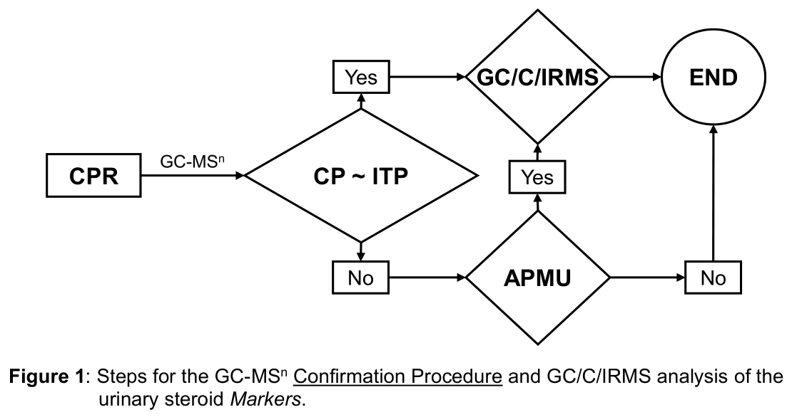

Technical Documents · ISL TD2027USM
Edition v1.0, 2027 (version 1.0) · effective 1 January 2027 · current
Retrieved on 26 November 2026 from https://www.wada-ama.org/sites/default/files/2026-03/td2027usm_final_1.pdf
Editions: v1.0, 2027 (current) · v2.0, 2021 · v1.0, 2021 · v1.0, 2018 · v1.0, 2016 · v2.0, 2014 · v1.0, 2014 · v1.0, 2004
p. 1
Analytical and Reporting Requirements for the Urinary Markers of the Steroidal Module of the Athlete Biological Passport
1.0 Introduction
The purpose of this Technical Document (TD), which constitutes an integral part of the International Standard for Laboratories (ISL)[1], is to harmonize the analysis and reporting of the urinary Markers of the Steroidal Module of the Athlete Biological Passport (ABP) to uncover the Use of synthetic forms of Endogenous Anabolic Androgenic Steroids (EAAS), in particular testosterone and its precursors.
1.1 Procedure for Analysis of the Urinary Steroid Markers
The Analytical Testing Procedure (ATP) applied to the analysis of the urinary steroid Markers involves the measurement of the urinary concentrations of six (6) naturally occurring EAAS, namely Testosterone (T), its Metabolites [Androsterone (A), Etiocholanolone (Etio), 5αAndrostane-3α,17β-diol (5αAdiol) and 5β-Androstane-3α,17β-diol (5βAdiol)], and its epimer epitestosterone (E). The ratios of the urinary steroid Markers concentrations (see Table 1) are automatically calculated in ADAMS, with the exception of the T/E ratio, which is reported directly by the Laboratory.
a) The ATP for the urinary steroid Markers is a mandatory ATP (see ISL TD ATP[2]) and, therefore, it is applied to all urine Samples.
b) The analysis of the urinary steroid Markers follows a two (2)-step procedure:
i. An Initial Testing Procedure (ITP) based on the Gas Chromatography-Mass Spectrometric (GC-MSⁿ ) quantification of the urinary steroid Markers (see Article 2.1). Substances which may impact the urinary steroid Markers (see Article 2.1.2) shall also be included in the relevant ITP to support steroidal Passport interpretation by the Athlete Passport Management Unit (APMU), and
ii. A subsequent Confirmation Procedure (CP) (see Article 2.2), which consists of the GCMSn quantification and identification (as per ISL TD IDCR[3]) of the urinary steroid Markers and the eventual performance of Gas Chromatography/Combustion/Isotope Ratio Mass Spectrometry (GC/C/IRMS) analysis (see ISL TD IRMS[4]). The CP is performed when an elevated T/E ratio in the Sample constitutes an outlier in the corresponding Passport, as determined by the Adaptive Model, triggering an Atypical Passport Finding - Confirmation Procedure Request (*ATPF-*CPR) in ADAMS. A CP may also be performed upon request to the Laboratory (see Article 2.2.1 b).
[Comment to Article 1.1: When analyses specific to the ABP are requested, only the "A" Sample shall be considered for the ITP and CP. In cases where the "A" Sample is not suitable for the performance of the ABP Markers analysis (e.g., there is insufficient Sample volume; the Sample container has not been properly sealed or has been broken; the Sample's integrity has been compromised in any way; the "A" Sample is missing), a splitting procedure of the "B" Sample could be performed, as detailed in the ISL[1].]
p. 2
Table 1. Urinary Markers of the Steroidal Module of the ABP.
| Urinary | Steroid Markers | Determination |
|---|---|---|
| - Testosterone (T) - Epitestosterone (E) - Androsterone (A) - Etiocholanolone (Etio) - 5α-Androstane-3α,17β-diol (5αAdiol), and - 5β-Androstane-3α,17β-diol (5βAdiol) | Determined by the Laboratory by GC-MSⁿ from the combination of the free and glucuronidated steroids (released after hydrolysis with an enzyme with substrate specificity for β-D- glucuronide linkages, such as purified β- glucuronidase from E. coli or other Fit-for- Purpose enzymes with the same substrate specificity, as determined by the Laboratory during Test Method validation). | EAAS concentrations |
| - T/E ratio - 5αAdiol/E - A/Etio - 5αAdiol/5βAdiol | Determined by the Laboratory based on T and E concentrations. Automatically computed in ADAMS from respective measured and reported EAAS concentrations. | Ratios of EAAS concentrations |
2.0 Analytical Testing Procedure Requirements
2.1 Initial Testing Procedure Requirements
The ITP analysis for the urinary steroid Markers shall be based on a GC-MSⁿ Quantitative Procedure.
2.1.1 ITP Validation Requirements (see also ISL TD VAL[5])
| Parameter | Requirement |
|---|---|
| Working Range | The working range of the Quantitative Procedure shall be investigated at the concentrations of the urinary steroid Markers normally found in Athletes’ Samples. |
| Limit of Quantification (LOQ) | The LOQ shall be determined during Test Method validation as the lowest concentration that can be measured with an uc (%) not greater than (≤) 30% and shall meet the following criteria: • T, E ≤ 1 ng/mL • 5αAdiol, 5βAdiol ≤ 10 ng/mL • A, Etio ≤ 500 ng/mL |
p. 3
Maximum allowed Relative Combined Standard Measurement Uncertainty, uc_Max (%) (ITP)
| Level | A | Etio | T | E | Adiols (5α-, 5β-) | T/E |
|---|---|---|---|---|---|---|
| at LOQ | ≤ 30% | ≤ 30% | ≤ 30% | ≤ 30% | ≤ 30% | |
| at ≥ 5 x LOQ | ≤ 20% | ≤ 20% | ≤ 20% | ≤ 20% | ≤ 25% | |
| [T] and [E] > 5 ng/mL | ≤ 15% | |||||
| [T] and/or [E] ≤ 5 ng/mL | ≤ 30% |
2.1.2 ITP Analysis Requirements
| Parameter | Requirement |
|---|---|
| Quantitative Procedure | a) The concentrations of the urinary steroid Markers shall be measured in one (1) Aliquot by a GC-MSⁿ Quantitative Procedure. Appropriate isotopically-labelled preparations of urinary steroid Marker(s) shall be used as internal standards. b) When needed, the volume of the Aliquot may be adjusted, for example, as a function of its Specific Gravity (SG). c) In each sequence of analysis, calibration standard(s) shall be included. d) At least one (1) urine QC sample representative of the low part of the working range (e.g., within the first quartile of the working range) and one (1) urine QC sample representative of the high part of the working range (e.g., within the fourth quartile of the working range) shall be used. |
| Enzymatic Hydrolysis | An enzyme with substrate specificity for β-D-glucuronide conjugates and minimizing the risk of conversion of endogenous steroids (e.g., purified β-glucuronidase from E. coli) shall be used for the hydrolysis of the glucuronide-conjugated urinary steroids. The efficiency of hydrolysis shall be controlled in each Aliquot. |
| Derivatization | The urinary steroid Markers shall be determined as TMS derivatives (TMS enol ethers and/or TMS ethers). The efficiency of the derivatization shall be controlled in each Aliquot through the monitoring of mono-O-TMS vs. di-O-TMS derivative of A. |
| Factors impacting the urinary steroid Markers | The Laboratory shall: a) Monitor for signs of microbial activity [e.g. presence of indicators of 3α-hydroxysteroid dehydrogenase (HSD) activity]. [Comment: The effect of microbial contamination may increase when direct enzymatic hydrolysis is applied to urine Samples.] b) Test for the presence of the following non-prohibited substances: i. Conjugated Metabolite(s) of ethanol [e.g., ethanol glucuronide (EtG)], and ii. 5α-reductase inhibitors (e.g., Metabolites of finasteride and dutasteride). |
p. 4
2.1.3 Reporting Initial Testing Procedure Results for the Urinary Steroid Markers
Following the performance of the ITP, the Laboratory shall report in ADAMS the measured concentrations of the urinary steroid Markers and the T/E ratio for each Sample analyzed.
The Laboratory shall report:
a) The SG of the Sample, as determined by the Laboratory (see ISL TD DL[6]).
b) The uncorrected concentrations of T, E, A, Etio, 5αAdiol and 5βAdiol, expressed in nanograms per milliliter (ng/mL).
[Comment to Article 2.1.3 b): When the ITP analysis of a urinary steroid Marker is not possible due to, for example, dilution, unusual matrix interferences, signs of microbial contamination, inhibition of enzymatic hydrolysis or incomplete derivatization, the Laboratory shall repeat the analysis with an alternative Sample preparation procedure (e.g., changing Aliquot volumes, application of Solid Phase Extraction (SPE), or extraction with a different solvent).
If the concentration cannot be determined, the affected urinary steroid Marker shall be reported as "-1". The Laboratory shall make a corresponding comment in the Lab Results in ADAMS (e.g., < LOQ, incomplete derivatization).
The Laboratory may also provide information on other steroids such as DHEA and DHT at the request of the Testing Authority (TA), the Passport Custodian (PC), the APMU or WADA.]
c) The T/E ratio (calculated from measured T and E concentrations).
d) The concentrations of the indicators of microbial activity 5α-androstanedione (5αAND) and 5β-androstanedione (5βAND), expressed in ng/mL. The ratios 5aAND/A and 5βAND/Etio will be automatically calculated in ADAMS.
e) The presence in the Sample of non-prohibited substance(s) that may alter the urinary steroid Markers. The Laboratory shall report the estimated concentrations of the following substances:
i. EtG ≥ 5 µg/mL (in micrograms per milliliter, µg/mL).
ii. Carboxy-finasteride, 4-hydroxy- and/or 6-hydroxy-dutasteride (in ng/mL).
[Comment to Article 2.1.3 e) ii.: For harmonization purposes, an MRPL at 5 ng/mL is established for these 5α-reductase inhibitors; however, the MRPL is not a reporting limit and, therefore, the Laboratory may report these compounds at concentrations below the MRPL if detected in a Sample.]
p. 5
2.1.4 Sample Validity for the Steroidal Module of the ABP
The validity of the urine Sample for the Steroidal Module of the ABP will be determined automatically upon reporting the measured concentrations of the urinary steroid Markers in ADAMS. A urine Sample will be invalid for the ABP only when signs of extensive degradation are observed, as determined by:
a) 5αAND/A ≥ 0.1, and/or
b) 5βAND/Etio ≥ 0.1
[Comment to Article 2.1.4: In addition, following the reporting of the urinary steroid Markers in ADAMS by the Laboratory, the validity of the Sample may be modified by the APMU upon review of the data. For example, the APMU could invalidate a Sample for the ABP by considering the presence of substances that may alter the concentrations of the urinary steroid Markers in the Sample (see ISL TD APMU[7]).]
Table 2. Summary of conditions for reporting [T] and [E]
| Marker(s) | Reported [T] | Reported [E] | Reported T/E |
|---|---|---|---|
| [T] and [E] higher than or equal to (≥) LOQ(T) and LOQ(E), respectively | Report [T] as measured | Report [E] as measured | Report T/E based on measured [T] and [E] |
| [T] and/or [E] not measured in the Sample | |||
| · [T] lower than (<) LOQ(T) | -1 | Report [E] as measured | -1 |
| · [E] lower than (<) LOQ(E) | Report [T] as measured | -1 | Report T/E based on measured [T] and LOQ of E (T/LOQE) |
| · [T] and [E] lower than (<) | |||
| LOQ(T) and LOQ(E), respectively | -1 | -1 | -1 |
2.2 Confirmation Procedure Requirements
2.2.1 Confirmation Procedure Requests
a) Confirmation Procedure Requests triggered by Atypical Passport Findings through ADAMS
i. Once the ITP data of the urinary steroid Markers is entered and matched with the corresponding Doping Control Form (DCF) in ADAMS, the Adaptive Model automatically updates the steroidal Passport. If an ATPF is identified based on an abnormally high T/E value, an ATPF-CPR is triggered and sent automatically to p. 6 the Laboratory through ADAMS. The Laboratory shall ensure the reception and management of ATPF-CPR notifications using a dedicated ADAMS account(s).
ii. The TA¹ shall inform the Laboratory whether to proceed or not with the CP of the urinary steroid Markers, as soon as possible and no later than fourteen (14) days from the receipt of the ATPF-CPR notification.
- Upon receipt of the confirmation to proceed with the CP, the Laboratory shall proceed with the CP of the urinary steroid Markers as soon as possible.
- Any justification from the TA or the PC¹ to not proceed with the CP shall be provided in writing according to Article 8.6 of the ISL TD APMU[7]. In such cases, the Laboratory shall update the Lab Results in ADAMS for the Sample with a comment stating that the TA or the PC¹ , as applicable, requested to not perform the CP, and the reasons given.
- In the absence of communication from the TA or the PC¹ within fourteen (14) days from the ATPF-CPR notification, the Laboratory shall proceed with the CP of the urinary steroid Markers.
iii. When the Laboratory receives an ATPF-CPR for a Sample for which Adverse Analytical Finding(s) (AAF) have been reported for other Prohibited Substance(s) or Prohibited Method(s), the Laboratory shall consult the TA (or RMA, if different) about the need to conduct the CP for the urinary steroid Markers.
b) Confirmation Procedure Requests from the Testing Authority, the Passport Custodian, the Athlete Passport Management Unit or WADA.
The Adaptive Model will also identify abnormal values of the other urinary steroid Markers ratios (5αAdiol/E, A/Etio and 5αAdiol/5βAdiol). However, in such cases the Laboratory will not receive an automatic ATPF-CPR notification through ADAMS. Instead, the APMU will advise the PC (who will advise the TA, if different) on whether the Sample shall be subjected to a CP for the urinary steroid Markers. In such cases, the Laboratory shall receive a written request from the TA¹ , or WADA, before proceeding with the CP.
¹The APMU or PC, where the PC is not the TA, may contact, in writing, the Laboratory regarding performance of a CP of the urinary steroid Markers on behalf of the TA. In such cases, the APMU (which may have been bestowed such authority by the PC) or the PC shall copy the relevant TA.
p. 7
2.2.2 Confirmation Procedure
a) The CP for the urinary steroid Markers includes the GC-MSⁿ quantification and identification (in compliance with the ISL TD IDCR[3]), as well as the possible GC/C/IRMS analysis (see ISL TD IRMS[4]), of the urinary steroid Markers.
In addition, the CP shall include the estimation of the EtG concentration. Upon request from the TA¹ or WADA, the presence of 5α-reductase inhibitors shall also be confirmed.
b) The Laboratory shall confirm quantitatively all the urinary steroid Markers before proceeding with the GC/C/IRMS analysis, except if:
i. The TA has authorized the Laboratory to proceed with the confirmation analysis of the urinary steroid Markers and the GC/C/IRMS regardless of the ITP results, or
ii. The TA has exceptionally authorized the Laboratory to proceed directly to GC/C/IRMS analysis without the quantitative confirmation of the urinary steroid Markers (for example, in cases of limited Sample volume).

Figure 1: Steps for the GC-MSⁿ Confirmation Procedure and GC/C/IRMS analysis of the urinary steroid Markers.
However, GC/C/IRMS analysis is not mandatory when, following an ATPF-CPR for an abnormally high T/E ratio, the confirmed T/E value is below the upper tolerance limit calculated by the Adaptive Model provided within the ATPF-CPR notification received from ADAMS.
c) The validation and analytical requirements presented in Article 2.1 for the GC-MSⁿ ITP shall also apply for the GC-MSn CP, with the modifications described in Articles 2.2.2.1 and 2.2.2.2 below.
p. 8
2.2.2.1 CP Validation Requirements (see also ISL TD VAL[5])
| Parameter | Requirement |
|---|---|
| Identification of Markers | The Laboratory shall validate the Qualitative Procedure for confirmation of the identity of the urinary steroid Markers in accordance with the requirements of the ISL TD IDCR [3] and ISL TD VAL [5]. Adiols Level A Etio T E T/E (5α-, 5β-) at 5 x LOQ ≤ 15% [T] and [E] > 5 ng/mL ≤ 15% |
Maximum allowed Relative Combined Standard Measurement Uncertainty, uc_Max (%) (CP)
| Level | A | Etio | Adiols (5α-, 5β-) | T | E | T/E |
|---|---|---|---|---|---|---|
| at 5 x LOQ | ≤ 15% | ≤ 15% | ≤ 15% | |||
| [T] and [E] > 5 ng/mL | ≤ 15% | ≤ 15% | ≤ 15% |
2.2.2.2 CP Analysis Requirements
| Parameter | Requirement |
|---|---|
| Quantitative Procedure | a) The concentrations of the urinary steroid Markers shall be confirmed in a single measurement by applying a GC-MSⁿ Quantitative Procedure. Appropriate isotopically-labelled preparations of urinary steroid Marker(s) shall be used as internal standards. b) The Analytical Method shall be capable of measuring the total content of the urinary steroid Markers, i.e., the sum of the measured concentrations of the free steroids released after hydrolysis of their glucuronide-conjugated phase-II Metabolites and the free steroid fraction excreted as unconjugated. The same or different Aliquot(s) may be used for these determinations, in accordance with Test Method validation results. c) The concentration of T in the free fraction (Tfree) shall be used to assess the validity of the Sample for the ABP (see Article 2.2.3 e). d) In each sequence of analysis, a calibration curve shall be included. e) At least one QC sample, depending on the ITP quantification results for the Markers, shall be included in each confirmatory analytical batch. |
| Qualitative Procedure | The identification of the urinary steroid Markers that triggered the CP shall be confirmed by a GC-MSⁿ Qualitative Procedure (in compliance with the ISL TD IDCR [3]). |
| Enzymatic Hydrolysis | a) An enzyme with substrate specificity for β-D-glucuronide conjugates and minimizing the risk of conversion of endogenous steroids (e.g., purified β-glucuronidase from E. coli) shall be used for the hydrolysis of the glucuronide-conjugated urinary steroids. b) An SPE procedure shall be performed prior to the enzymatic hydrolysis of the Sample to minimize the impact of potential microbial activity. c) The efficiency of hydrolysis shall be controlled in each Aliquot, according to CP validation data, with isotopically labeled A-glucuronide (or an equivalent scientifically recognized alternative). |
| Factors impacting the urinary steroid Markers | The Laboratory shall: a) Monitor for signs of microbial activity (e.g. presence of indicators of HSD activity and presence of the urinary steroid Markers in the free fraction). b) Test for the presence of the following non-prohibited substances: i. Conjugated Metabolite(s) of ethanol [e.g., ethanol glucuronide (EtG)], and ii. 5α-reductase inhibitors (e.g., finasteride, dutasteride), if requested. |
p. 9
2.2.3 Reporting Confirmation Procedure Results for the Urinary Steroid Markers
Following the performance of the CP, the Laboratory shall report in ADAMS:
a) The confirmed SG of the Sample.
b) The confirmed total concentrations, expressed in ng/mL, of the urinary steroid Markers (i.e., the combination of the free steroid fraction released after hydrolysis of its glucuronide-conjugated phase-II Metabolite and the unconjugated free steroid) and the associated Measurement Uncertainty (uc, expressed in ng/mL).
[Comment to Article 2.2.3 b): If the concentration(s) cannot be determined (e.g., the estimated concentration is lower than (<) the LOQ) or the urinary steroid Marker(s) cannot be identified during the CP, the affected Marker(s) shall be reported as "-1" and the Laboratory shall make a corresponding comment in the Lab Results in ADAMS (e.g., matrix interferences).]
c) The confirmed T/E ratio (calculated from the confirmed T and E concentrations).
d) The GC/C/IRMS results (as per ISL TD IRMS[4]), where applicable, or add a comment that the GC/C/IRMS analysis was not performed at the request of the TA.
e) The confirmed concentrations of the indicators of microbial activity, expressed in ng/mL:
i. 5αAND
ii. 5βAND, and
iii. T in the free fraction (Tfree).
The ratios 5αAND/A, 5βAND/Etio and Tfree/Ttotal will be automatically calculated in ADAMS.
[Comment to Article 2.2.3 e): In addition to the determination of the 5αAND/A and 5βAND/Etio ratios as indicators of microbial contamination, the determination during the CP of an elevated Tfree / Ttotal ratio > 0.05 will also invalidate the urine Sample for the ABP.]
f) The presence in the Sample of substance(s) that may alter the urinary steroid Markers: if detected in the Sample, the Laboratory shall report the confirmed estimated concentrations as specified in Article 2.1.3.e).
p. 10
3.0 References
[1] The World Anti-Doping Code International Standard for Laboratories.
[2] WADA Technical Document ISL TD ATP: Analytical Testing Procedures.
[3] WADA Technical Document ISL TD IDCR: Minimum Criteria for Chromatographic-Mass Spectrometric Confirmation of the Identity of Analytes for Doping Control Purposes.
[4] WADA Technical Document ISL TD IRMS: Detection of Synthetic Forms of Prohibited Substances by GC/C/IRMS.
[5] WADA Technical Document ISL TD VAL: Minimum Requirements for Validation of Analytical Testing Procedures for Doping Control.
[6] WADA Technical Document ISL TD DL: Decision Limits for the Confirmatory Quantification of Exogenous Threshold Substances.
[7] WADA Technical Document ISL TD APMU: Athlete Passport Management Unit Requirements and Procedures.
[Comment to Article 3.0: Current versions of WADA International Standards and Technical Documents may be found at https://www.wada-ama.org/en/what-we-do/international-standards]
Retrieved on 26 November 2026 from https://www.wada-ama.org/sites/default/files/2026-03/td2027usm_final_1.pdf